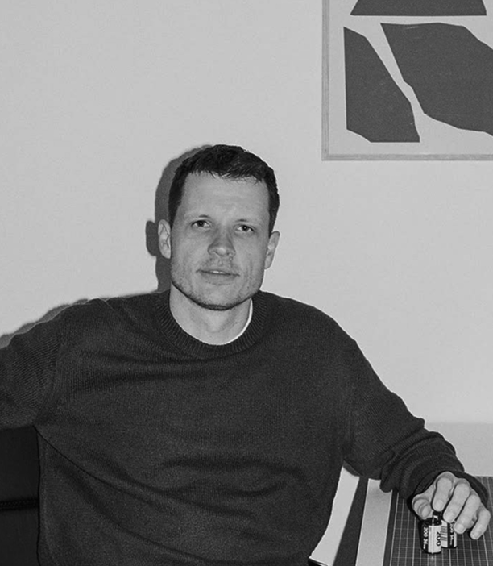
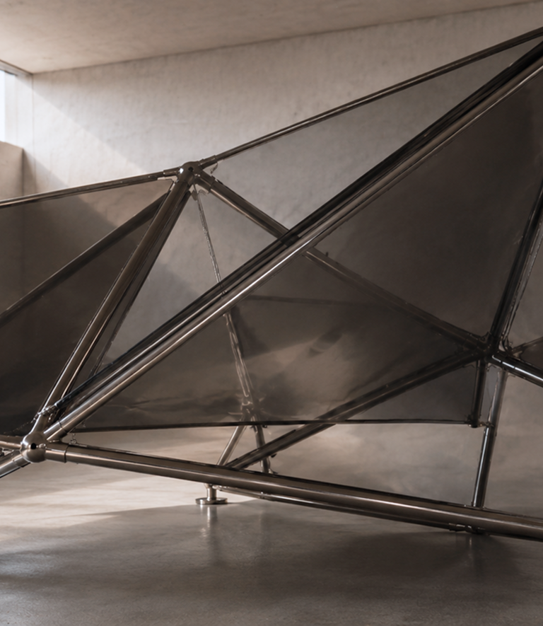
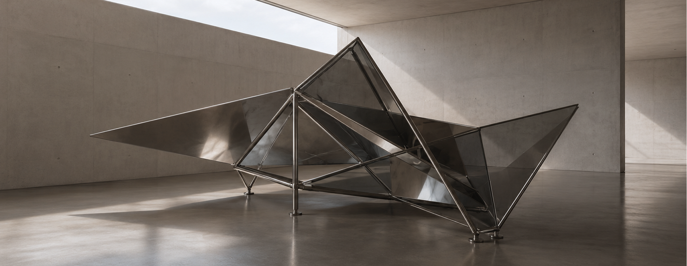
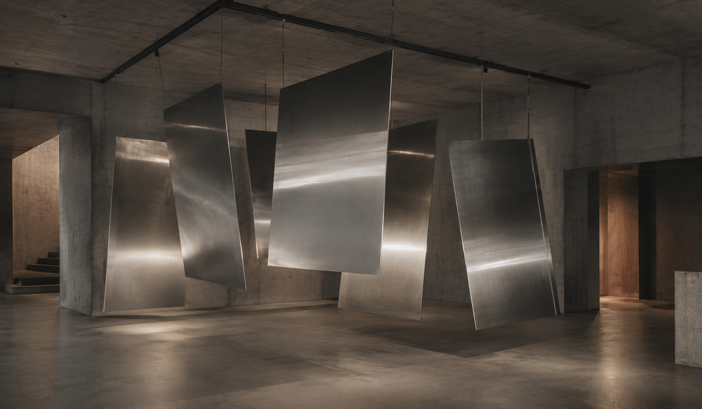

Художник и автор пространственных инсталляций, работающий на пересечении искусства и архитектуры.
В своих работах использует металл, зеркальные поверхности, стекло и направленный свет. Исследует взаимодействие человека с масштабом, отражением и движением внутри пространства. Многие проекты построены на изменении восприятия среды через световые и отражающие конструкции.
Плоскость сдвига (2024 г.)
Объект работает с напряжением между инженерной точностью и визуальной нестабильностью.
Отражающие поверхности вовлекают в работу архитектуру пространства, свет и движение зрителя, превращая объект в изменчивую систему восприятия. Материалы — полированная сталь, стекло и направленный свет — используются как инструменты создания глубины, бликов, теней и оптических искажений.


Траектория отражения (2025 г.)
Инсталляция исследует, как отражающие поверхности меняют восприятие пространства и движения внутри него.

Подвешенные металлические плоскости работают как система отражений: они улавливают свет, фрагменты архитектуры и присутствие зрителя, создавая ощущение постоянно меняющейся среды.